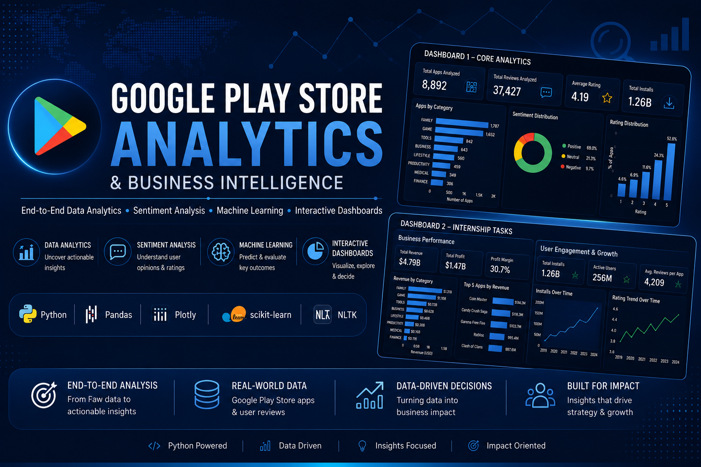
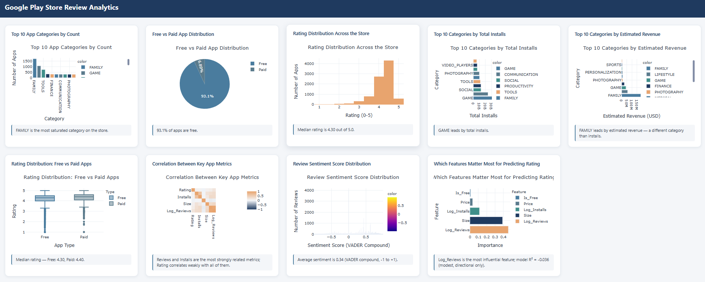
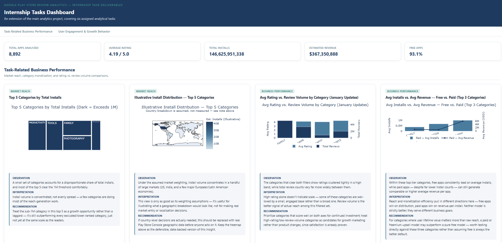
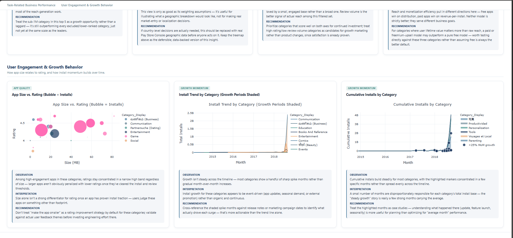

Turning raw Play Store metadata and user reviews into actionable business intelligence through data analytics, sentiment analysis and machine learning.
This project analyzes Google Play Store application data together with user reviews to understand what factors influence app performance, user satisfaction and market success. The analysis combines exploratory data analysis, sentiment analysis and predictive modelling to transform raw data into meaningful business insights.
The project includes data cleaning, feature engineering, visualization, sentiment scoring using VADER, machine learning models and two interactive dashboards developed for business decision-making.
Apps Analysed
User Reviews
Average Rating
Total Installs
Estimated Revenue
Free Apps


